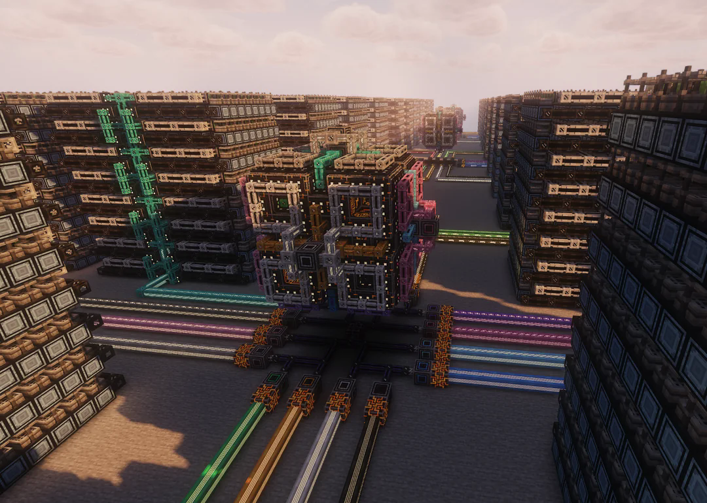
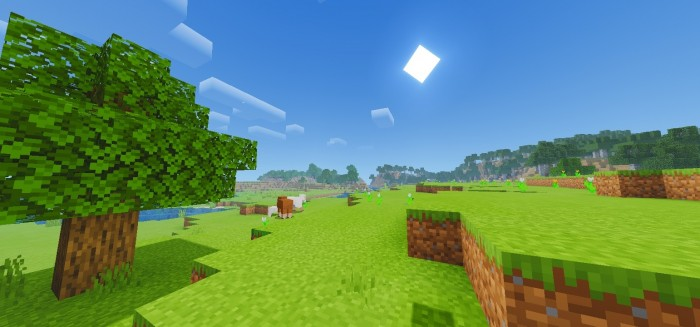

A World With Almost No Built-In Story
Minecraft (2011) drops you into a world with almost no built-in story and almost no guidance: just a health bar, some trees, and the vague idea that there is a dragon somewhere at the end of the world (Lobo, 2019). You start as Steve, punch your first tree, make your first tools, and slowly learn the basic loop of mining, crafting, and surviving. On its own, that experience is simple and open-ended, but what kept me coming back was not just the base game. It was the way different player communities took that empty space and turned it into completely different kinds of play.
When I was younger, I watched Tekkit and other modded series and then tried to copy them on my own laptop. Later, I found Skyblock maps and quest-based packs that pushed me to think about goals in a world that did not really have any built in. More recently, I have been drawn to packs like All The Mods 10, where you can build giant factories, design bee-based production chains, and wire up storage networks with mods like AE2. At some point, it stopped feeling like the same game I had started with and more like a toolkit for whatever kind of challenge the community wanted to build.
Figure 0. A highly realistic modded Minecraft environment, contrasting sharply with the vanilla experience.
Player-Authored Narrative and The Israphel Era
Minecraft (2011) has almost no built-in story. When you first spawn, the world is procedural and empty: there are no cutscenes, no explicit backstory, and no guided narrative arcs beyond the achievement system and the "defeat the Ender Dragon" goal. This absence is not a bug. Instead, it functions as a narrative affordance: the game's emptiness invites players and communities to author stories themselves, turning Minecraft into a platformic narrative apparatus where meaning is built through collective play, YouTube series, and machinima rather than through Mojang's code (Lobo, 2019; Menotti, 2013).
Israphel and the "elite fanproducer" moment
A key turning point in this shift is the Yogscast's Shadow of Israphel series (2011). In this series, the creators stage a serialized fantasy-horror story inside Minecraft, using the game's environment, audio, and implied events to build suspense and character-driven drama. The blocks and textures become a stage rather than just building materials. Menotti (2013) describes figures like the Yogscast as "elite fanproducers": high-profile content creators who help redefine how the public understands a game's purpose. For Minecraft, this meant turning a survival sandbox into a medium for audio-driven storytelling and serialized narrative.


The illusion of a built-in story
As a child, I genuinely believed that the eerie Israphel-style storyline was part of Minecraft's design, not something added in post-production. The game's minimal audio cues, lack of dialogue, and empty world meant that every faint sound or flicker of light became a narrative clue. This ambiguity helped spawn community-created myths like "Herobrine," a ghost story that mixed rumor, misinformation, and genuine player anxiety into a shared narrative object. Scholars call this kind of player-driven meaning-making emergent narrative: a story that is not written by developers, but constructed by players through action, interpretation, and shared lore.
The desire for player-authored narrative soon expanded well beyond episodic adventure series. I distinctly recall an era where the community used the game as a literal 3D animation studio to produce narrative machinima and music videos. Projects like CaptainSparklez's Fallen Kingdom repurposed Minecraft's mechanics and assets to tell tragic, emotionally resonant stories that had nothing to do with the core gameplay loop of mining and building.
Figure 3. A clip from Shadow of Israphel showcasing how Minecraft's blank canvas was transformed into a staged narrative space.
Speedrunning and The Competitive Reinvention

I started noticing Minecraft getting a fascinating second life through the concept of speedrunning. Speedrunning is usually something associated with classic platformers, where players exploit glitches and cut corners to reach a literal finish line as fast as possible. In a game like Minecraft, there is no obvious finish line. All you do is mine, craft, and build, and the experience can feel beautifully random and endless. But once players collectively decided that beating the Ender Dragon was the endpoint, that endpoint became a finish line. The vanilla game flipped from a chill sandbox into a high-stakes race track (Scully-Blaker, 2014; Kirichenko, 2022).
Scully-Blaker (2014) refers to this as an "emergent gameplay practice": the way players invent new rules for how a game is played, often bending or breaking the designer's intent. Speedrunners do this by fundamentally remapping the world. Strongholds, End crystals, and Nether portals are no longer scenery; they are variables, levers, and shortcuts. Every new version spawns a new meta and challenging new strategies. Players obsess over routing: testing out pearl hangs, checking the entity count to find the nearest stronghold, or calculating the exact angle to throw an Eye of Ender. It requires adapting on your toes to whatever random map the procedural generation gives you. Suddenly, an open world feels like a tightly wound obstacle course.
Kirichenko (2022) calls speedrunners "virtual naturalists" because they do not just play; they study the game like a rigorous lab experiment. The world seed, the version, and the player route all become variables. Instead of fighting the Ender Dragon naturally with a bow, speedrunners use completely unintended mechanics, like placing beds or respawn anchors in the End and intentionally blowing them up to inflict massive damage when the dragon perches. Each record, failed run, and newfound glitch becomes a footnote in a massive, shared community playbook.
Figure 5. A speedrunner executing mechanically demanding tricks, illustrating how Minecraft's world becomes a competitive race course.
Speedrunning is also an incredibly social performance. Runs are not just personal records; they are broadcasts, achievements, and objects of commentary. Viewers dissect every move, and runners refine their routes based on community feedback. Those new techniques then feed right back into the community as the next level of the meta. In the end, speedrunning reinvents Minecraft once again. The same blocky world that felt like a relaxed sandbox becomes a competitive sport built on glitches, fast-paced tricks, and procedural experimentation, proving the game is a flexible platform for however players want to treat it.
Modded Minecraft and The Engineering Reinvention

Onto my favorite aspect of the game: modded Minecraft. This is where I first connected with the game beyond its surface. As a kid, I watched YouTube videos of modpacks filled with flying machines, quantum storage, and sprawling factories that looked like they were built by engineers instead of casual players. At that moment, I knew I wanted to run modded Minecraft myself. The realization that my basic consumer laptop struggled to run these massive packs pushed me out of the game and directly into the technical side of computing.
Running modded Minecraft taught me practical skills that still show up in my work today. It opened up a whole world of computer literacy. I used PowerShell to map out the game's install directory and figure out exactly where to place mod files so the launcher could detect them. I dove into the Java side, editing configuration variables like memory allocation and garbage collector settings to reduce crashes. I learned to resolve conflicts by tweaking which mods could share block numbers and deleting duplicates that destabilized the code. I learned about file systems, creating servers, and port forwarding. Nothing came from a textbook; it came from a simple rule: if the game worked, I kept playing, and if it crashed, I had to trace the problem back and fix it.
Modded Minecraft drew me into hardware in a way classroom lectures never did. I started paying attention to graphics cards, RAM, and CPU performance because I desperately wanted to run large modpacks like All The Mods 10 without lag. Eventually, I learned how to build my own PC just to push the game further. In many ways, modded Minecraft taught me more about real-world problem solving and technical troubleshooting than most of my first- and second-year university courses.
Schifter, Cipollone, and Moffat (2016) argue that Minecraft, especially in modded or educational forms, functions like a platform for crafting scientific experiments. Players are not just building houses; they are testing variables, comparing outcomes, and refining their setups over time. You place a few machines, observe where the system breaks, and redesign it. You test different power setups, pipe layouts, and storage networks until you arrive at something stable. In that sense, a pack like All The Mods 10 becomes an informal engineering simulator. It may not teach formal calculus, but it teaches systems thinking, pattern recognition, and cause-and-effect chains.
Szedlak and Leyendecker (2025) examine process-improvement simulation games, showing how players handle massive cognitive load when managing complex flows of resources, tasks, and decisions. That precisely matches modded Minecraft, where players juggle production pipelines, power networks, and inventory systems simultaneously. The difference from a textbook is that the stakes feel real. If your AE2 network crashes, your base stops functioning. If your quantum storage overflows, your automation chain fails. This constant pressure is what turns modded Minecraft from a fun add-on into a demanding learning environment where players train themselves to think like engineers.
Figure 7. A massive automated production pipeline in a modded Minecraft pack, illustrating the engineered complexity players learn to manage.
Conclusion
Looking across these three concepts, Minecraft does not come across as a single, fixed game. Instead, it feels like a shared platform that different communities keep bending into new shapes. In the Israphel era, creators and fans treated it as a storytelling engine, filling an empty world with their own characters, plots, and horror myths. With speedrunning, players redefined the same world as a race course, testing its rules like scientists and turning small movement tricks and glitches into the core of a competitive meta. In the world of modded Minecraft, the game turns into an informal engineering lab where players manage pipelines, networks, and performance issues that resemble real technical work.
Schneier and Taylor describe Minecraft as part of a "handcrafted gameworld" structure, where different devices and setups create different ways of inhabiting the same game space (Schneier & Taylor, 2018). Their framing helps explain why Minecraft has stayed culturally relevant for so long. The core code and block system stay mostly the same, but the practices built on top of them keep changing. In that sense, Minecraft starts to look less like a single title and more like an operating system for adventure, where communities install their own "applications" in the form of narrative series, speedrun categories, and modpacks.
This flexibility matters for learning as well as for fun. Player-authored narrative builds literacy and creative collaboration. Speedrunning trains pattern recognition, improvisation, and comfort with failure. Modded Minecraft pushes players into systems thinking, technical troubleshooting, and basic computing skills. Taken together, these communities show that Minecraft is not just a survival sandbox. It is a flexible apparatus for shared experimentation: a kind of operating system that lets different groups script their own ways to play, compete, and learn inside the same pixelated world.

Figure 8. The same game, three entirely different experiences, each shaped by a distinct player community.
References
- Kirichenko, V. V. (2022). Speedrunner as a Virtual Naturalist. Galactica Media: Journal of Media Studies, 4(4). https://galacticamedia.com/…
- Lobo, S. (2019). Novel subjects: Robinson Crusoe & Minecraft and the realism of the digital subject. Game Studies, 19(1). https://gamestudies.org/…
- Menotti, G. (2013). Diggy Holes and Jaffa Cakes: The rise of the elite fanproducer in video-gaming culture. Journal of Gaming & Virtual Worlds, 5(2), 165–182. https://doi.org/10.1386/…
- Schifter, C., Cipollone, M., & Moffat, F. (2016). Mining Learning and Crafting Scientific Experiments. Educational Technology & Society, 19(2), 356–370. https://www.jstor.org/…
- Schneier, J., & Taylor, N. (2018). Handcrafted gameworlds: Space-time biases in mobile Minecraft play. New Media & Society, 20(9), 3471–3488. https://doi.org/10.1177/…
- Scully-Blaker, R. (2014). Speedrunning Through Space With de Certeau and Virilio. Game Studies, 14(1). https://gamestudies.org/…
- Szedlak, C., & Leyendecker, B. (2025). Examining the Relationship Between Mental Workload, Learning Outcomes and Acceptance in a Process-Improvement Simulation Game. Simulation & Gaming, 56(3), 261–288. https://doi.org/10.1177/…